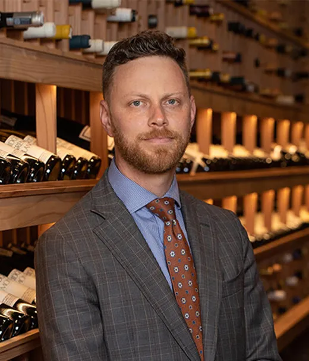
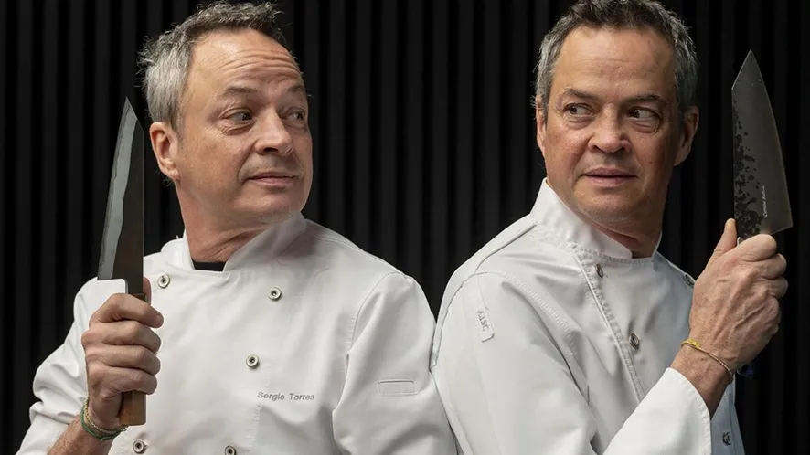
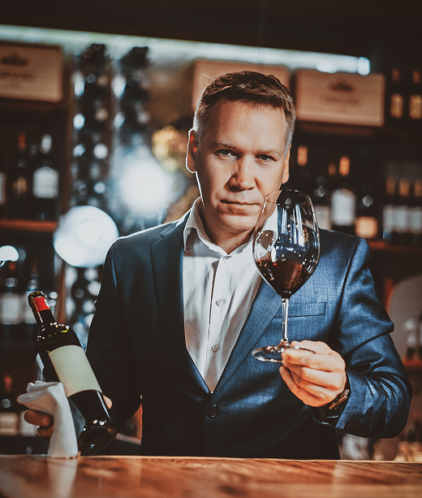
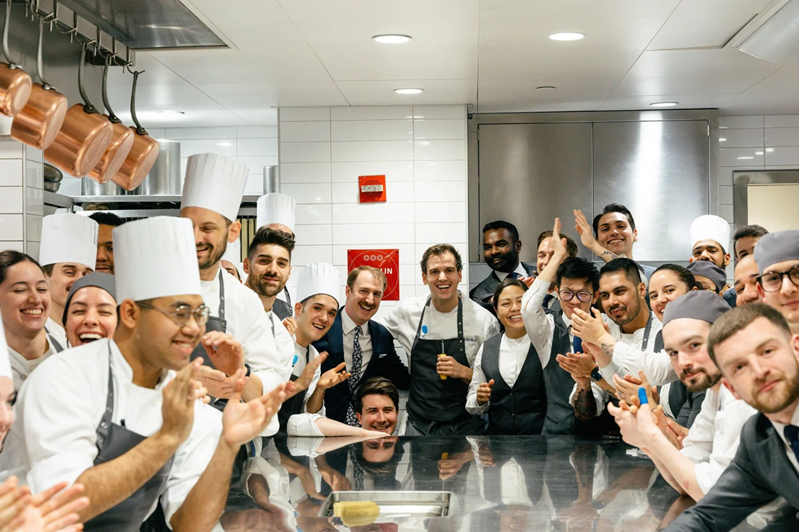

Meet our Team
Julian Martel
Head Chef & Founder

Martel is the visionary and founder behind Aeterna, bringing a philosophy rooted in respect for time and technique. Hailing from a lineage of classic European chefs, Martel's approach is to distill flavors to their purest form, creating dishes that are simultaneously modern and timeless. His journey, heavily influenced by the seasonal harvest of Central Europe and the discipline of Mediterranean cooking, laid the foundation for Aeterna's unique culinary voice in Prague.
"The purpose of a meal is not to follow a trend, but to create a lasting memory."
Eleanor Vance is the architect of the Aeterna guest experience. With a background honed in Michelin starred environments across Europe, Eleanor ensures that the precision found in the kitchen is perfectly mirrored in the dining room. His philosophy is centered on intuitive, discreet service anticipating the needs of every guest before they are even voiced.
"True hospitality is an unseen ballet a commitment to quiet, enduring perfection."
Eleanor Vance
General Manager

Sergio and Javier Torres:
Co-Chefs & Cuisine

Sergio and Javier Torres are the force of singular precision driving Aeterna's kitchen. Hailing from Valencia, their twin bond translates into a rare culinary synergy, ensuring an unparalleled consistency in every service. They operate not as two separate chefs, but as one expert mind commanding four hands, embodying the quiet, flawless collaboration that defines our restaurant's execution.
“Our connection is the secret ingredient; precision is not debated, it is simply felt”.
As Sommelier, Tomáš ensures our selection of wines pairings complements the nuanced flavors of Chef Martel's cuisine. He is an authority on rare Central European spirits and works closely with the Sommelier to offer a seamless transition between the wine cellar and the bar. His expertise guarantees that every sip enhances the Aeterna experience.
“A truly great wine is a study in balance; it should be remembered, never forgotten”.
Tomáš Svoboda
Sommelier

